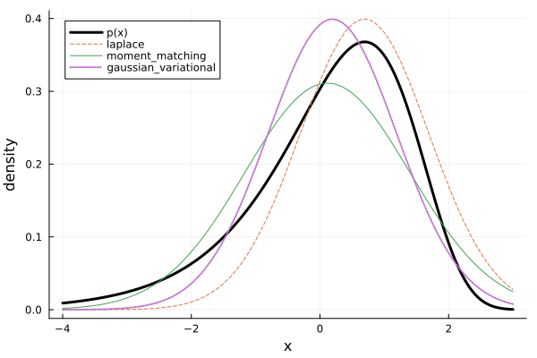

Gaussian approximations of a density
Much of approximate inference replaces a density it cannot handle by a Gaussian it can. There is more than one way to choose that Gaussian, and the choice matters. This package implements the three that inference schemes use, each as a function of a log-density given as plain Julia code:
| Function | The Gaussian | Used by |
|---|---|---|
laplace | centred at the mode, with the curvature there | the Laplace approximation, Laplace propagation |
moment_matching | with the density's mean and covariance | expectation propagation |
gaussian_variational | closest in $\mathrm{KL}(q \,|\, p)$ | variational inference, CVI |
Each takes logp, the log of an unnormalised density, and a starting point x0, a number or a vector. Each returns a named tuple with the Gaussian distribution, an approximation logZ of the log-normaliser $\log \int e^{\log p(x)} dx$, whether it converged, and the number of iterations. Gradients and Hessians come from ForwardDiff, so logp must accept its dual numbers, which ordinary Julia code does.
using ExpectationApproximations, Distributions
import BayesBase
const EA = ExpectationApproximationsThree Gaussians for one density
Take the skewed density
\[p(x) \propto \exp\left(x - \tfrac{1}{2} e^{x}\right),\]
a Gumbel distribution for the minimum. Its normaliser, mean and variance are known: $Z = 2$, $\mathbb{E}[x] = \log 2 - \gamma$ with $\gamma$ Euler's constant, and $\mathrm{Var}[x] = \pi^2 / 6$. Its mode is $\log 2$.
logp(x) = x - exp(x) / 2
laplace = EA.laplace(logp, 0.0)
matching = EA.moment_matching(logp, 0.0; backend = EA.GaussHermite(40))
variational = EA.gaussian_variational(logp, 0.0; backend = EA.GaussHermite(40))
γ = Base.MathConstants.eulergamma
rows = [
("exact", log(2) - γ, π^2 / 6, log(2)),
("laplace", mean(laplace.distribution), var(laplace.distribution), laplace.logZ),
("moment_matching", mean(matching.distribution), var(matching.distribution), matching.logZ),
("gaussian_variational", mean(variational.distribution), var(variational.distribution), variational.logZ),
]
for (name, m, v, logZ) in rows
println(rpad(name, 22), "mean ", round(m; digits = 4), " variance ", round(v; digits = 4), " logZ ", round(logZ; digits = 4))
endexact mean 0.1159 variance 1.6449 logZ 0.6931
laplace mean 0.6931 variance 1.0 logZ 0.6121
moment_matching mean 0.116 variance 1.6441 logZ 0.6931
gaussian_variational mean 0.1931 variance 1.0 logZ 0.6121using Plots
xs = range(-4, 3; length = 400)
plot(xs, exp.(logp.(xs)) ./ 2; label = "p(x)", linewidth = 3, color = :black, xlabel = "x", ylabel = "density")
plot!(xs, pdf.(laplace.distribution, xs); label = "laplace", linestyle = :dash)
plot!(xs, pdf.(matching.distribution, xs); label = "moment_matching")
plot!(xs, pdf.(variational.distribution, xs); label = "gaussian_variational", linestyle = :dot, linewidth = 2)
The three answer different questions:
- Laplace looks only at the mode and the curvature there. It is cheap, needs no quadrature, and is exact for a Gaussian. Here it sits at the mode $\log 2$, well to the right of the mean, and its variance, $1$, misses the heavy left tail. Its
logZis an estimate of $\log Z$, neither a lower nor an upper bound. - Moment matching reproduces the mean and the variance, which is what expectation propagation needs, and its
logZis $\log Z$ itself, up to the quadrature's error. To cover the left tail it spreads out: it is lower than $p$ at the peak and puts mass on the right, where $p$ has little. - The variational Gaussian maximises the evidence lower bound $\mathbb{E}_q[\log p] + H[q]$, so its
logZis a lower bound on $\log Z$. Penalised for mass where $p$ has little, it keeps the narrow width of the peak but moves toward the mean. On this density its bound happens to equal Laplace's estimate of $\log Z$; the bound of Laplace's Gaussian itself is lower:
elbo(q) = BayesBase.expectation(EA.GaussHermite(40), logp, q) + entropy(q)
(laplace_gaussian = elbo(laplace.distribution), variational_gaussian = elbo(variational.distribution))(laplace_gaussian = 0.46336444306446345, variational_gaussian = 0.612085713764618)Why moment matching places its points on the density
Expectation propagation computes the moments of a tilted density: a factor $f$ times a Gaussian cavity $c$. A natural way is quadrature on the cavity, $\sum_i w_i f(x_i)$ with points from $c$, which is what tilted_mean_cov does. It fails when the factor is much sharper than the cavity: all the points fall where the factor is negligible.
cavity, y, r = Normal(0.0, 10.0), 3.0, 1.0e-4 # a wide cavity, a sharp observation
logf(x) = logpdf(Normal(x, sqrt(r)), y)
v_exact = inv(1 / var(cavity) + 1 / r) # conjugate, so the answer is known
_, _, v_cavity = EA.tilted_mean_cov(EA.GaussHermite(20), logf, cavity)
result = EA.moment_matching(x -> logf(x) + logpdf(cavity, x), 0.0)
(exact = v_exact, points_on_cavity = v_cavity, moment_matching = var(result.distribution))(exact = 9.99999000001e-5, points_on_cavity = 0.0, moment_matching = 9.99999000000982e-5)moment_matching first finds the density's Laplace approximation, places the points on it, and weighs each point by the density against that Gaussian. The points then sit where the mass is, whatever the cavity, and a Gaussian density is matched exactly.
A posterior in two dimensions
The same functions take vectors. The bioassay logistic regression from Gelman et al., Bayesian Data Analysis, has a two-dimensional posterior with a strong skew in the slope:
using StatsFuns: logistic
x = [-0.86, -0.3, -0.05, 0.73]
n = [5, 5, 5, 5]
y = [0, 1, 3, 5]
logposterior(θ) = logpdf(MvNormal(zeros(2), [16.0 0.0; 0.0 400.0]), θ) +
sum(y[i] * log(logistic(θ[1] + θ[2] * x[i])) + (n[i] - y[i]) * log(logistic(-(θ[1] + θ[2] * x[i]))) for i in eachindex(x))
for (name, result) in (
"laplace" => EA.laplace(logposterior, zeros(2)),
"moment_matching" => EA.moment_matching(logposterior, zeros(2)),
"gaussian_variational" => EA.gaussian_variational(logposterior, zeros(2)),
)
println(rpad(name, 22), "mean ", round.(mean(result.distribution); digits = 2), " sd ", round.(sqrt.(var(result.distribution)); digits = 2))
endlaplace mean [0.74, 7.2] sd [0.94, 4.31]
moment_matching mean [1.1, 10.35] sd [0.99, 4.87]
gaussian_variational mean [1.12, 10.29] sd [0.9, 3.66]The posterior of the slope is skewed to the right, so the moment-matched and variational means lie above Laplace's mode. Moment matching in two dimensions uses $20^2 = 400$ points by default. For higher dimensions, pass a cheaper backend, such as SphericalRadialCubature() with $2d$ points.
How each one is computed
laplaceruns Newton's method with a backtracking line search fromx0. A step that leaves the region wherelogpis finite is shortened. Where the Hessian is not negative definite, at a start wherelogpis not concave, its eigenvalues are reflected and floored, so the iteration still climbs.moment_matchingrunslaplace, then one weighted quadrature, as above. Where Laplace's method fails, or the weights are degenerate, it returns the Gaussian the points were placed on withconverged = false.gaussian_variationalwrites the bound as a quadrature over a standard Gaussian at fixed points, $\sum_i w_i \log p(m + L z_i) + \log\det L + \text{const}$. That is a smooth function of the mean $m$ and the Cholesky factor $L$, which Newton's method maximises, starting from Laplace's approximation. At the maximum it satisfies the fixed-point conditions of conjugate-computation variational inference.
All three also work in a constrained domain: see Constrained variables.
ExpectationApproximations.laplace — Function
laplace(logp, x0; tol = 1e-10, maxiters = 100)
-> (; distribution, logZ, mode, iterations, converged)The Laplace approximation of the density proportional to exp(logp(x)): a Gaussian at its mode, with the inverse of the negative Hessian there as covariance. x0 is a number or a vector, static vectors included; gradients and Hessians come from ForwardDiff, so logp can be any Julia function, an expectation of a log-density included.
The mode is found by Newton's method with a backtracking line search, so a step that leaves the domain of
logp, where it is-Inf, or that does not increase it enough is shortened.Where the negative Hessian is not positive definite, at a start where
logpis not concave, its eigenvalues are reflected and floored, so that Newton's method still climbs.logZis Laplace's approximation of the log-normaliser, withx̂the mode andHthe Hessian oflogpthere:\[\log \int e^{\log p(x)}\,dx \approx \log p(\hat x) + \frac{d}{2}\log 2\pi - \frac{1}{2}\log\det(-H),\]
zero for a normalised Gaussian.
distribution is a Normal or an MvNormal. converged is false when maxiters Newton steps did not settle, or the line search could not increase logp.
julia> result = EA.laplace(x -> logpdf(Gamma(3.0, 0.5), x), 1.0);
julia> result.mode ≈ 1.0 # (shape - 1) * scale
true
julia> result.converged
truelaplace(logp, x0, domain::Domain; tol = 1e-10, maxiters = 100)The Laplace approximation in the unconstrained coordinates of domain: of u ↦ logp(forward(domain, u)) + logjacobian(domain, u), started at inverse(domain, x0), and pushed forward onto the domain, a TransformedGaussian on any but the real line.
logZapproximates the same integral as in the original coordinates: the log-Jacobian accounts for the change of variables.modeisforward(domain, û), the image of the mode in unconstrained coordinates. It is not the mode ofdistribution, nor oflogp: a change of variables moves a mode.
ExpectationApproximations.moment_matching — Function
moment_matching(logp, x0; backend = GaussHermite(20), tol = 1e-10, maxiters = 100)
-> (; distribution, logZ, mean, iterations, converged)The Gaussian with the mean and covariance of the density proportional to exp(logp(x)): the projection of expectation propagation, by quadrature. x0 is a number or a vector. With q the density's Laplace approximation and xᵢ, wᵢ the points and weights of backend for q,
\[Z \approx \sum_i w_i \frac{p(x_i)}{q(x_i)}, \qquad m \approx \frac{1}{Z} \sum_i w_i \frac{p(x_i)}{q(x_i)}\, x_i, \qquad \Sigma \approx \frac{1}{Z} \sum_i w_i \frac{p(x_i)}{q(x_i)}\, (x_i - m)(x_i - m)^\top,\]
computed in log space.
The points are put where the density is, not where a start or a cavity is: on the density's Laplace approximation, from laplace started at x0, and weighted by the density against it, exp(logp(x)) / q(x). A factor much sharper than its cavity is then resolved, where points on the cavity, as in tilted_mean_cov, all fall where it is negligible. Where Laplace's method does not converge, the points are on a unit Gaussian at x0.
logZapproximateslog ∫ exp(logp(x)) dx, exactly for a Gaussian density;meanis the Gaussian's mean;iterationsandconvergedare those of the Laplace approximation that places the points, andconvergedis also false where the weights are not finite, or the moments are not a Gaussian's, as when the weights fall on a single point:distributionis then the Gaussian the points were placed on.
backend must prepare a point set for a Gaussian with positive weights, a quadrature such as GaussHermite or a router that chooses one. distribution is a Normal or an MvNormal.
moment_matching(logp, x0, domain::Domain; kwargs...)The moment-matched Gaussian in the unconstrained coordinates of domain: of u ↦ logp(forward(domain, u)) + logjacobian(domain, u), started at inverse(domain, x0), and pushed forward onto the domain, a TransformedGaussian on any but the real line. logZ approximates the same integral as in the original coordinates, and mean is forward(domain, m), the image of the Gaussian's mean m: a point in the domain, not the mean of distribution, which a nonlinear transform moves.
ExpectationApproximations.gaussian_variational — Function
gaussian_variational(logp, x0; backend = EADefault(), tol = 1e-10, maxiters = 100)
-> (; distribution, logZ, mean, iterations, converged)The Gaussian closest to the density proportional to exp(logp(x)) in the sense of variational inference: the q that minimises KL(q ‖ p), or maximises the evidence lower bound E_q[logp] + H[q]. x0 is a number or a vector.
The bound is maximised over the Gaussian's mean m and the Cholesky factor L of its covariance, the diagonal of L on a log scale. The expectation is a quadrature from backend in standard coordinates: the points zᵢ and weights wᵢ of a standard Gaussian, so that
\[\mathbb{E}_q[\log p] + H[q] = \sum_i w_i \log p(m + L z_i) + \log\det L + \frac{d}{2}\log(2\pi e)\]
is a smooth function of (m, L), with the same points at every step. Newton's method, as in laplace, with gradients and Hessians from ForwardDiff, finds its maximum, starting at Laplace's approximation of logp. At the maximum, E_q[∇ logp] = 0 and E_q[∇² logp] = -Σ⁻¹, up to the quadrature's error: the fixed point of conjugate-computation variational inference (Khan and Rue), the natural-gradient iteration in the Gaussian's mean parameters. That iteration itself is not used: on a two-dimensional logistic regression it fell into a two-cycle at full step and took hundreds of iterations at shorter ones, where Newton's method on the bound takes six.
logZis the bound atq, a lower bound onlog ∫ exp(logp(x)) dx, equal to it where the density is Gaussian;meanis the Gaussian's mean;convergedis false whenmaxitersNewton steps did not settle totol, or no step length raised the bound.
distribution is a Normal or an MvNormal. logp must accept ForwardDiff's numbers, as for laplace.
gaussian_variational(logp, x0, domain::Domain; kwargs...)The variational Gaussian in the unconstrained coordinates of domain: of u ↦ logp(forward(domain, u)) + logjacobian(domain, u), started at inverse(domain, x0), and pushed forward onto the domain, a TransformedGaussian on any but the real line. logZ is the same lower bound as in the original coordinates, and mean is forward(domain, m), the image of the Gaussian's mean m: a point in the domain, not the mean of distribution, which a nonlinear transform moves.